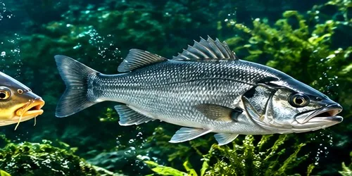

अपना Feed खुद बनाएं
Seabass Feed (सीबास)
घर पर अपना Seabass feed तैयार करें — सही कच्चा माल + Vela Peptide additives।

1. कच्चा माल (Raw materials)
- Soybean meal / DOCसोयाबीन खली — प्रोटीन का मुख्य स्रोत
- Mustard cake (Sarso khali)सरसों खली — प्रोटीन और ऊर्जा
- Rice bran / DORBचावल की भूसी — ऊर्जा और फाइबर
- Corn / Maizeमक्का — ऊर्जा (कार्बोहाइड्रेट)
- Wheat bran / Rice polishगेहूं चोकर / राइस पॉलिश — ऊर्जा और फाइबर
- Fish meal / Meat-chicken mealफिश मील / मीट-चिकन मील — उच्च प्रोटीन
2. Vela Peptide Additives
मात्रा (%) मछली की उम्र, तालाब और कच्चे माल की quality पर निर्भर करती है। अपनी Seabass के लिए सही formulation हमसे WhatsApp पर पूछें।
अक्सर पूछे जाने वाले सवाल (FAQ)
Seabass feed kaise banaye? (सीबास का feed घर पर कैसे बनाएं?)
Seabass feed banane ke liye kachcha maal (Soybean meal / DOC, Mustard cake (Sarso khali), Rice bran / DORB, Corn / Maize, Wheat bran / Rice polish, Fish meal / Meat-chicken meal) ko peeskar barik powder banayein, achhi tarah milayein, phir Vela Peptide additives (amino acids, enzymes, probiotics, vitamins aur minerals) milakar pellet machine se pellet ya goliyan bana lein aur chhaanv mein sukha lein.
Seabass feed mein kaun sa kachcha maal lagta hai?
Seabass feed ke liye mukhya kachcha maal: Soybean meal / DOC, Mustard cake (Sarso khali), Rice bran / DORB, Corn / Maize, Wheat bran / Rice polish, Fish meal / Meat-chicken meal. Protein ke liye soybean meal, sarso khali aur fish meal; urja ke liye makka, rice bran aur gehun chokar.
Seabass ki growth tez kaise karein?
Santulit protein wala feed, saaf paani, sahi sankhya mein machhli (stocking) aur roz samay par feeding zaruri hai. Feed mein amino acids, enzymes aur probiotics milane se Seabass feed ka behtar upyog karti hai aur growth sudharti hai.
Seabass feed mein additives kitne pratishat daalein?
Matra Seabass ki umar, talab aur kachche maal ki quality par nirbhar karti hai. Apne Seabass ke liye sahi formulation WhatsApp +91 91566 99969 par muft poochhein.